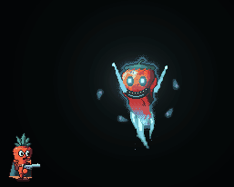

Ghost Pepper
A dead bhut jolokia come back as a cartoon ghost. It floats, phases through bullets, teleports behind you, breathes ghost fire and looses homing wisps. The burrow's bottom-room boss.
The Hot Pepper's spooky big cousin: a big wrinkly ghost pepper with no legs, its tip trailing off into a wispy spectral tail. It glows pale cyan and grins a wide hollow grin under two hollow glowing eyes. It guards the bottom boss room of the Burrow Encounter, and drops the blue key orb when it dies.
Behaviour
When the room's doors shut it rises up out of the floor, 40 px over 1.4 s. It can't attack until it's fully up, and its first attack comes 1.2 s after that.
It never touches the ground. It drifts after the nearest standing player at up to 55 px/s, hovering about 150 px to one side of them with the tip of its tail 45 px above their feet, wandering lazily around that spot and bobbing. It stays inside its room and never sinks closer than 14 px to the floor. Touching it does no harm: all its damage comes from its attacks.
Between attacks it waits 1.3 s to 2.2 s. Each time it picks one of the three attacks at random: it favours the breath when its target is close (within 170 px), the teleport when they're far (beyond 190 px), and it rarely picks the same attack twice in a row. Phasing runs on its own timer and comes before anything else when it's due.
Attacks
Phase
The first phase comes 7 s into the fight, then every 10 s to 14 s.
| Step | Lasts | What you see |
|---|---|---|
| Shimmer | 0.7 s | It flickers and starts to fade. This is the telegraph; it can still be shot. |
| Phased | 3 s | It turns see-through and glides at 105 px/s straight through its target, aiming 110 px past them, then turning back. Bullets pass straight through it, and its health bar hides. |
| Fade in | 0.45 s | It solidifies again. Still intangible until this ends. |
Phasing does no damage by itself, but it can't be hurt (or killed) while phased. If it ends up within breath range when it fades back in, it goes straight into a breath.
Teleport
When its target is far away it vanishes in a puff of spectral smoke and a ghost-flame mark grows for 0.65 s where it will reappear: about 75 px behind a random player (the way they aren't facing), with its tail 20 px above their feet. If there's no room behind, it picks in front, further back or overhead instead, never more than 400 px away. It pops out at the mark and goes straight into a breath with a shortened wind-up of 0.4 s. It teleports at most once every 6 s to 9 s.
It can't be hit while it's gone.
Ghost-fire breath
It sweeps in beside its target at 120 px/s (giving up the chase after 1.6 s) and holds about 70 px to their side.
| Step | Lasts | What you see |
|---|---|---|
| Suck in | 0.65 s | Cheeks glow and the mouth rounds. It turns to aim at you quickly. This is the telegraph. |
| Blow | 1.5 s | A cone of blue-white ghost fire, 125 px long and 0.4 rad wide to each side of its aim. It turns slowly to follow you (at 0.8 rad/s) and creeps toward you. |
| Recover | 0.6 s | It drifts on. |
Standing in the flames burns for 13 hp every 0.3 s, with a shove away from the mouth. The flames tilt at most 1 rad up or down from straight ahead, so getting well above or below it is safe, and they don't go through walls or floors.
Homing wisps

It raises its arms and gathers ghost-flame wisps around itself for 0.8 s (the telegraph), then lets 5 go in a fan pointing upward. They burst out at 110 px/s, slow to 52 px/s and turn (at up to 1.7 rad/s) toward the nearest standing player. After 4.5 s, or on hitting a wall, they fizzle.
A wisp that reaches you deals 14 hp and knocks you along its flight. Wisps are shootable: any bullet pops one. A dash carries you straight through one without harm. They keep hunting even after the boss dies.
Enrage
When its health falls below 0.5 of its full health, it stops whatever it is doing and wails for 1.6 s (still hittable), then splits off 2 afterimage clones. The clones hover 130 px to each side of it and copy its attacks: each blows its own cone of fire at the player nearest to it when the boss breathes, and adds 2 wisps to each wisp volley. They can't be hurt, fade after 14 s, and it splits off fresh ones every 24 s while enraged.
Enraged, everything comes faster: attack gaps and cooldowns are scaled by 0.65x, wind-ups by 0.8x, and its float speed by 1.3x.
Strategy
- Shoot it while it's solid. When it starts to shimmer, switch to the adds or reposition: bullets are wasted until it fades back in.
- When the teleport mark appears behind you, turn around and move: the breath that follows has a short wind-up.
- Get above or below the breath rather than running from it: it only tilts so far.
- Pop wisps before they close in. A spray of fire into the fan as it launches clears several at once; dash through any that get close.
- After the enrage, mind the clones' fire as well as the boss's. They are untouchable, so keep shooting the real one (it's in the middle and solid).
- The room keeps sending adds (pumpkins, a mushroom and zombies) until it dies; don't let them pin you in the flames.
Headshots
Its head box is its face: the hollow eyes and grin near the top of the body, a little forward of centre on the side it's facing. Like the body, it can't be hit while it's phased or teleporting.
Co-op
The host runs the Ghost Pepper's AI and movement; everyone else follows its streamed state. Vanish and appear, each breath, each wisp volley, the enrage and each split are events every machine plays out in step. Each machine draws the flames and wisps itself and checks only its own carrot, so a burn or a wisp hit always matches what that player saw. Each player's own bullets pop wisps on their machine. Dash i-frames dodge everything: the flames and the wisps alike.
It goes after whoever is nearest, and its teleport picks a random player, so in a squad everyone gets their turn.
Appearances
- Burrow Encounter: the boss of the bottom room (blue torches). Killing it opens the room and drops the blue key orb. Carried back to the hub and placed on the blue pedestal, it unlocks part of The Ginger's health. The other two room bosses, Sweet Potato and Red Corn, drop the other two orbs.
Design notes
Every power answers a habit: phasing punishes standing still and holding the trigger, the teleport punishes keeping your distance, the breath punishes staying close, and the wisps test aim and dash timing. Each has its own clear telegraph (the shimmer, the growing mark, the glowing cheeks, the raised arms) so a player who reads them can always react.
Tunable parameters
These are read straight from the game's files, so they are always the current values. Open the file in the Godot Inspector to change them.
Stats
Edit styles/enemies/ghost_pepper.tres · fields defined in scripts/enemy_stats/ghost_pepper_stats.gd
| Parameter | Value | Range | What it does |
|---|---|---|---|
| Health | |||
hp | 1200 hp | 1 to 10000 | Hit points (a boss room's hp_scale multiplies this). |
hit_push | 14 px/s | 0 to 150 | How hard a bullet shoves it sideways (it drifts back). |
| Float | |||
float_speed | 55 px/s | 0 to 300 | Top drifting speed while it hovers about. |
float_accel | 120 px/s² | 1 to 1000 | How quickly it changes its drift (lower is floatier). |
hover_dist | 150 px | 0 to 400 | It likes to hover this far to the side of the player it's after... |
hover_height | 45 px | -100 to 300 | ...with the tip of its tail this far above their feet. |
hover_min | 14 px | 0 to 100 | The tip of its tail never sinks closer than this to the floor below it. |
wander_x | 45 px | 0 to 200 | A lazy wander around that spot: how far sideways and up and down, and how fast. |
wander_y | 18 px | 0 to 100 | |
wander_speed | 0.09 Hz | 0 to 3 | |
bob_amp | 3 px | 0 to 20 | The ghostly bob: height and speed. |
bob_speed | 2.4 rad/s | 0 to 10 | |
rise_time | 1.4 s | 0.1 to 5 | Rising up out of the floor when it arrives (it can't attack until it's up). |
rise_height | 40 px | 0 to 200 | How high it rises out of the floor before the fight starts. |
| Pacing | |||
first_attack | 1.2 s | 0 to 10 | Time before its first attack once it has risen. |
attack_gap_min | 1.3 s | 0 to 10 | Time between attacks (random in range). |
attack_gap_max | 2.2 s | 0 to 10 | |
approach_speed | 120 px/s | 0 to 400 | Sweeping in for a breath: its speed, and the longest it chases before blowing anyway. |
approach_time | 1.6 s | 0.1 to 5 | |
recover | 0.6 s | 0 to 3 | Recovery after an attack before it drifts on. |
| Phase | |||
phase_cooldown_min | 10 s | 0 to 60 | Time between phases (random in range); the first comes after phase_first. |
phase_cooldown_max | 14 s | 0 to 60 | |
phase_first | 7 s | 0 to 60 | |
phase_wind | 0.7 s | 0 to 3 | The shimmer telegraph before it goes intangible (still hittable). |
phase_time | 3 s | 0.1 to 10 | How long it stays intangible (bullets pass through). |
phase_fade | 0.45 s | 0 to 2 | Fading back in at the end (still intangible). |
phase_alpha | 0.28 | 0 to 1 | How see-through it is while phased (0 invisible, 1 solid). |
phase_speed | 105 px/s | 0 to 400 | While phased it glides at this speed straight through the player it's after... |
phase_overshoot | 110 px | 0 to 400 | ...aiming this far past them. |
| Teleport | |||
tele_cooldown_min | 6 s | 0 to 60 | Time between teleports (random in range). |
tele_cooldown_max | 9 s | 0 to 60 | |
tele_far | 190 px | 0 to 600 | It prefers teleporting when the player is farther away than this. |
tele_wind | 0.65 s | 0.1 to 3 | The telegraph: it's gone, and a ghost-flame mark grows where it'll appear. |
tele_behind | 75 px | 0 to 300 | Where it reappears: this far behind the player... |
tele_height | 20 px | -100 to 200 | ...with its tail tip this far above their feet. |
tele_range | 400 px | 50 to 800 | Never further than this from the player. |
tele_mark_size | 26 px | 4 to 80 | Size of the destination mark when fully grown. |
tele_breath_wind | 0.4 s | 0 to 2 | The breath wind-up right after it appears (shorter: the mark was the telegraph). |
| Breath | |||
breath_range | 170 px | 0 to 600 | It sweeps in for a breath when the player is within this distance. |
breath_hold | 70 px | 0 to 200 | Where it holds while blowing: this far to the side of the player. |
breath_wind | 0.65 s | 0 to 3 | Sucking in (the telegraph: cheeks glow, mouth rounds). |
breath_time | 1.5 s | 0 to 5 | How long it blows ghost fire. |
breath_len | 125 px | 0 to 400 | Length and half-angle of the flame cone. |
breath_spread | 0.4 rad | 0 to 1.2 | |
breath_max_tilt | 1 rad | 0 to 1.5 | How far the flames may tilt up or down from straight ahead. |
breath_turn | 0.8 rad/s | 0 to 6 | How fast the flames turn to follow the player (twice this while sucking in). |
breath_creep | 14 px/s | 0 to 100 | How fast it creeps toward the player while blowing. |
burn_damage | 13 hp | 0 to 100 | Burn damage each burn_tick while a player is in the flames, and its knockback. |
burn_tick | 0.3 s | 0.05 to 2 | |
burn_knock_x | 200 px/s | 0 to 800 | |
burn_knock_y | 150 px/s | 0 to 800 | |
| Wisps | |||
wisp_count | 5 | 1 to 20 | How many ghost-flame wisps it lets loose at once. |
wisp_wind | 0.8 s | 0 to 3 | Gathering them (the telegraph: they swirl around it, arms up). |
wisp_launch_speed | 110 px/s | 0 to 400 | They burst out at launch_speed, then settle to speed while homing in. |
wisp_speed | 52 px/s | 0 to 300 | |
wisp_turn | 1.7 rad/s | 0 to 10 | How fast they can turn toward a player. |
wisp_life | 4.5 s | 0.2 to 15 | How long they hunt before they fizzle. |
wisp_fan | 2.6 rad | 0 to 6.28 | The fan they burst out in (centred on straight up). |
wisp_size | 4.5 px | 1 to 20 | Hit size (half of the square that bullets and players touch). |
wisp_damage | 14 hp | 0 to 100 | Damage on a player, and its knockback (along its flight, upwards). |
wisp_knock_x | 170 px/s | 0 to 800 | |
wisp_knock_y | 120 px/s | 0 to 800 | |
| Enrage | |||
enrage_frac | 0.5 | 0 to 1 | Below this fraction of its health it wails and splits off clones. |
wail_time | 1.6 s | 0 to 5 | The wail (it hangs there, screaming; still hittable). |
clone_count | 2 | 0 to 4 | How many afterimage clones split off (they copy its breaths and wisps, and can't be hurt). |
clone_life | 14 s | 1 to 60 | How long the clones last, and how often (while enraged) it splits off fresh ones. |
clone_every | 24 s | 1 to 120 | |
clone_spread | 130 px | 0 to 400 | How far to each side of it the clones hover. |
clone_alpha | 0.4 | 0 to 1 | How see-through the clones are. |
clone_wisps | 2 | 0 to 10 | Wisps each clone adds to a wisp volley. |
enrage_cooldown | 0.65x | 0.1 to 2 | Once enraged: attack gaps and cooldowns scale by this... |
enrage_wind | 0.8x | 0.1 to 2 | ...wind-ups (telegraphs) by this... |
enrage_speed | 1.3x | 0.1 to 3 | ...and its float speed by this. |
| Juice | |||
flash_bright | 1.45x | 1 to 4 | Hit flash: how bright, how long, and at most how many a second. |
flash_time | 0.05 s | 0 to 0.5 | |
flash_rate | 4 /s | 0.5 to 20 | |
glow | 1.5 | 0 to 6 | The spectral aura around it: bloom intensity, how much it pulses, and how opaque it is. |
glow_pulse | 0.3 | 0 to 2 | |
glow_alpha | 0.42 | 0 to 1 | |
eye_glow | 2.4 | 0 to 6 | The hollow eyes' glow. |
fire_glow | 1.8 | 0 to 6 | The ghost fire's and the wisps' glow. |
wisp_glow | 2.2 | 0 to 6 | |
shake_breath | 0.25 | 0 to 1 | Screen shake: blowing, appearing out of a teleport, the wail, and the death. |
shake_appear | 0.3 | 0 to 1 | |
shake_wail | 0.6 | 0 to 1 | |
shake_death | 0.85 | 0 to 1 | |
death_time | 3 s | 1 to 10 | How long the dead husk lies there (crumpling, then fading over its last second). |